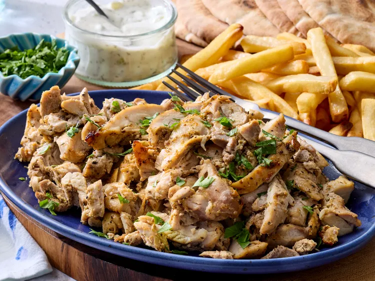
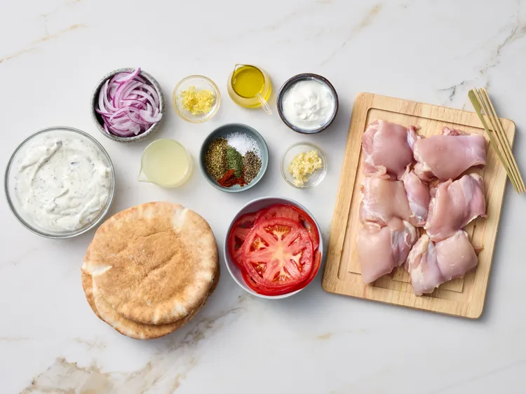
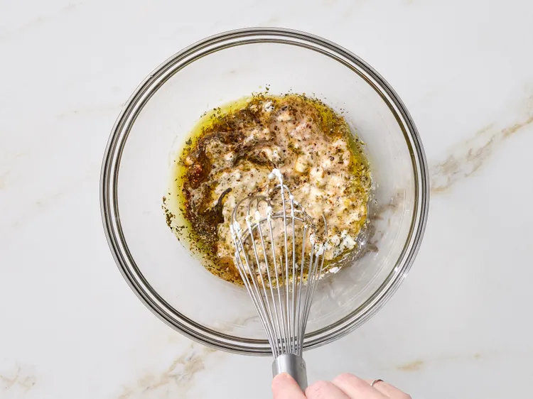
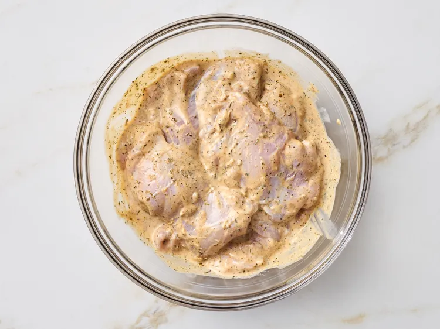
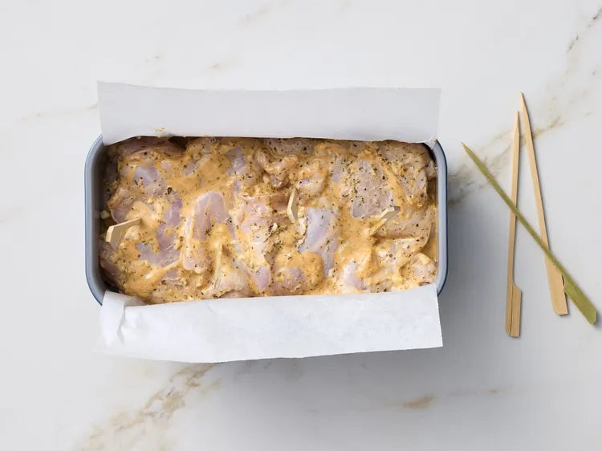
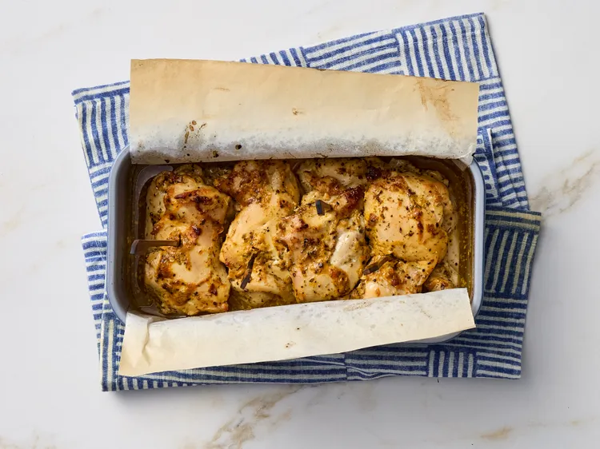
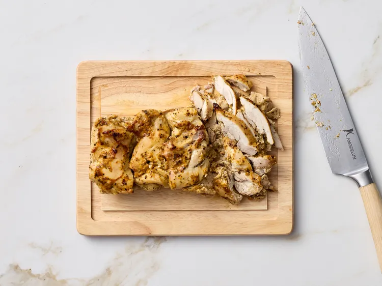
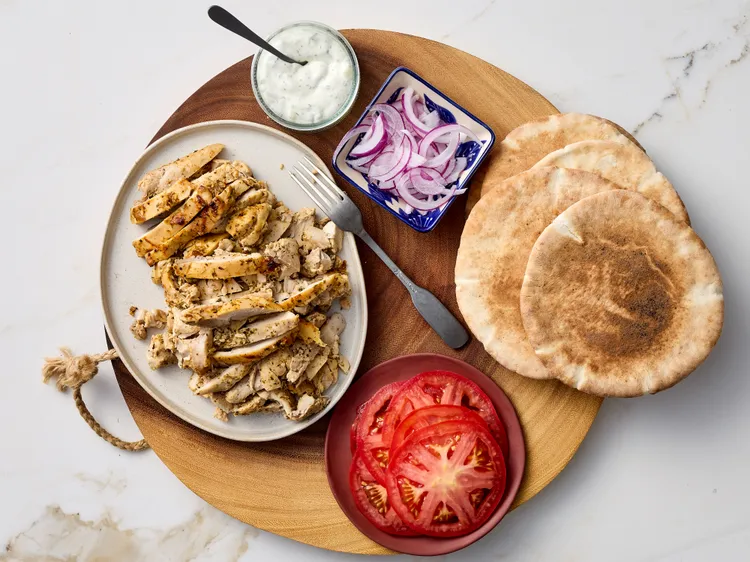

This loaf pan chicken gyros comes out moist and tender and picks up lots of flavor from the yogurt marinade.
step 1
Gather all ingredients. Preheat the oven to 400 degrees F (200 degrees C). Line a 9x5-inch loaf pan with parchment paper.

step 2
Whisk together yogurt, lemon zest, lemon juice, olive oil, garlic, oregano, salt, paprika, dill, and pepper in a large bowl. Add chicken and toss to coat.

step 3
Layer chicken thighs in the prepared loaf pan, then insert 3 to 4 bamboo skewers vertically through the layers to hold the chicken together. Scrape any remaining yogurt mixture over the chicken. (At this point, if desired, cover and marinate in the refrigerator for 2 hours to overnight.)

step 4
Bake until chicken is browned and tender and an instant-read thermometer inserted into the center registers 170 degrees F (77 degrees C), 1 hour and 10 minutes.

step 5
Let stand for 10 minutes.

step 6
Drain liquid from the loaf pan. Place chicken on a cutting board. Remove skewers and slice against the grain.

step 7
Arrange chicken, pitas, tzatziki, tomato, and red onion on a platter for people to assemble their own gyros.
